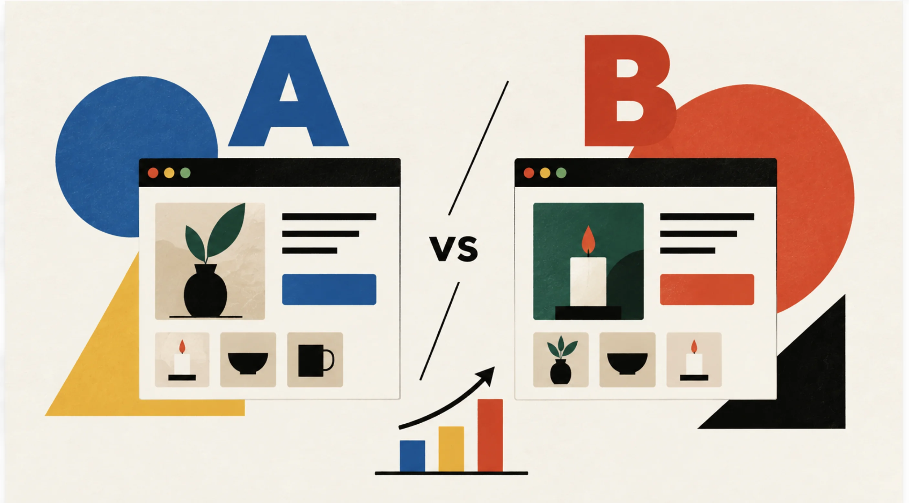
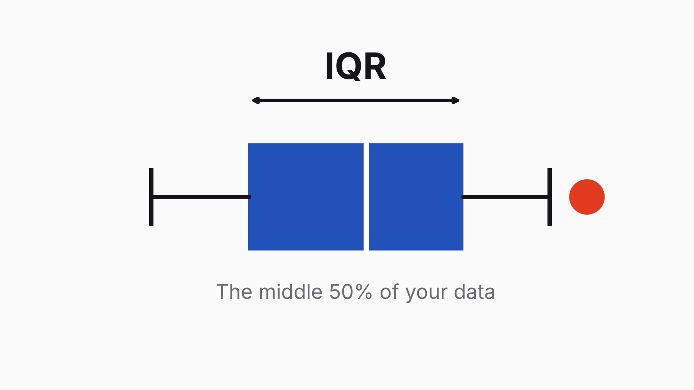
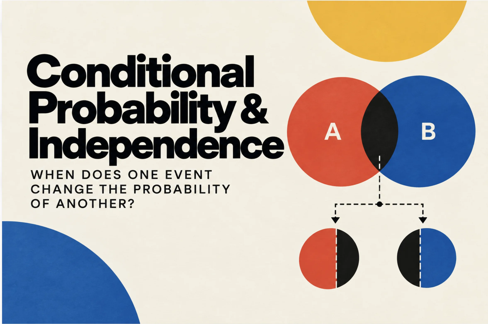

Knowledge
Statistics
How to read data — and make it less boring.
 Exploratory analysis · Retail
Exploratory Data Analysis
Exploratory analysis · Retail
Exploratory Data Analysis
Systematic exploration of NordHome's retail data — distributions, group comparisons, relationships and outliers.
 Descriptive statistics
Descriptive statistics
Descriptive statistics
Descriptive statistics
How to read the story hidden in data: center, spread and position.

Experimentation A/B TestingHow to design an experiment and tell whether a change really made things better.

Descriptive statistics IQRThe middle 50% of your data: spread, outliers and box plots.
 Probability
Probability Basics
Probability
Probability Basics
How likely is an event? Outcomes, events, and the complement, addition and multiplication rules.

Probability Conditional Probability & IndependenceWhen does one event change the probability of another? Dependent events and P(B | A).